Nyzo version 542 (commit on GitHub) completes the v1 blockchain changes and basic cycle-transaction functionality.
This version affects all run modes.
In BalanceListManager, the blockchain version is now provided when calling Block.balanceListForNextBlock(). The blockchain version is stored in both the block and the balance list.
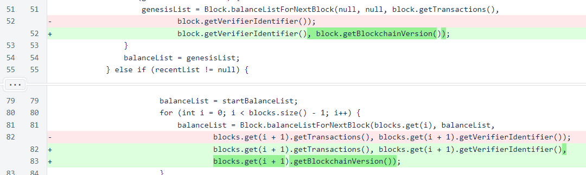In BalanceManager, several calls to System.out.println() have been replaced with corresponding calls to LogUtil.println(). LogUtil is a primitive, lightweight logging solution that currently provides awareness of the run mode and optional time stamping.
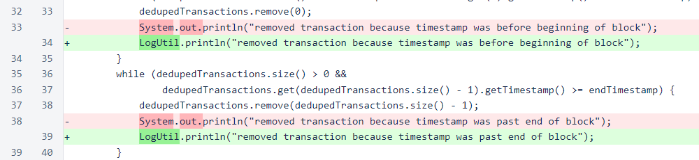In approvedTransactionsForBlock(), type-checking of transactions now accounts for coin-generation transactions in block 0 and cycle transactions in blockchain version 1.
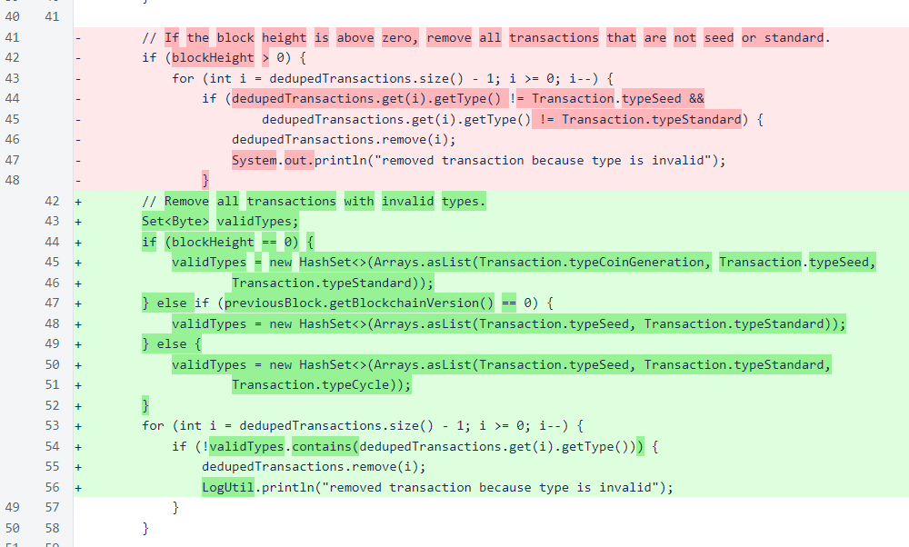Enforcement of cycle-transaction rules has been added immediately before enforcement of the rules for locked accounts.
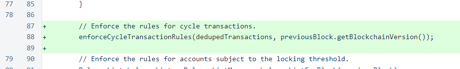In cycle transactions, the initiator of the transaction is identified in the sender field. However, for the purposes of transferring funds, the sender is the cycle account (0000...0002).
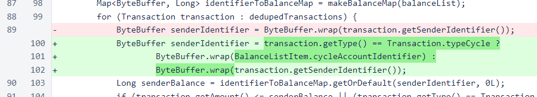The enforceCycleTransactionRules() method, as its name indicates, is responsible for the rules specific to approval or rejection of cycle transactions. There rules are deliberately strict. The cycle account will likely be the single largest account in Nyzo for as long as Nyzo exists, so it will be a large target for those wishing to steal coins. The first two enforcements are simple: cycle transactions are not allowed before blockchain version 1, and cycle transactions over ∩100,000 are not allowed.
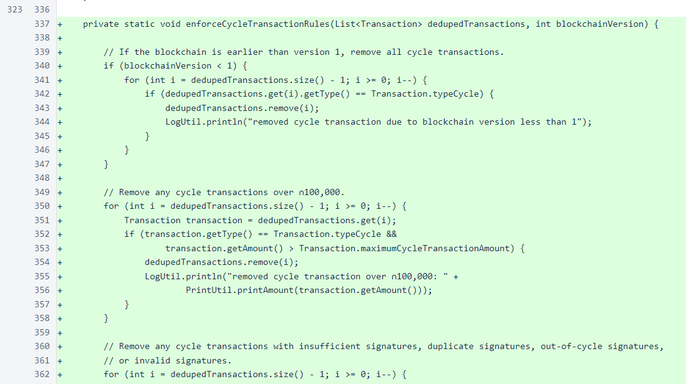The remainder of the method deals with the signatures of the transaction. Each transaction must be signed by at least 75% of the cycle. This logic errs on the side of strictness, rejecting transactions for any deviations from expectation, such as inclusion of duplicate signatures.
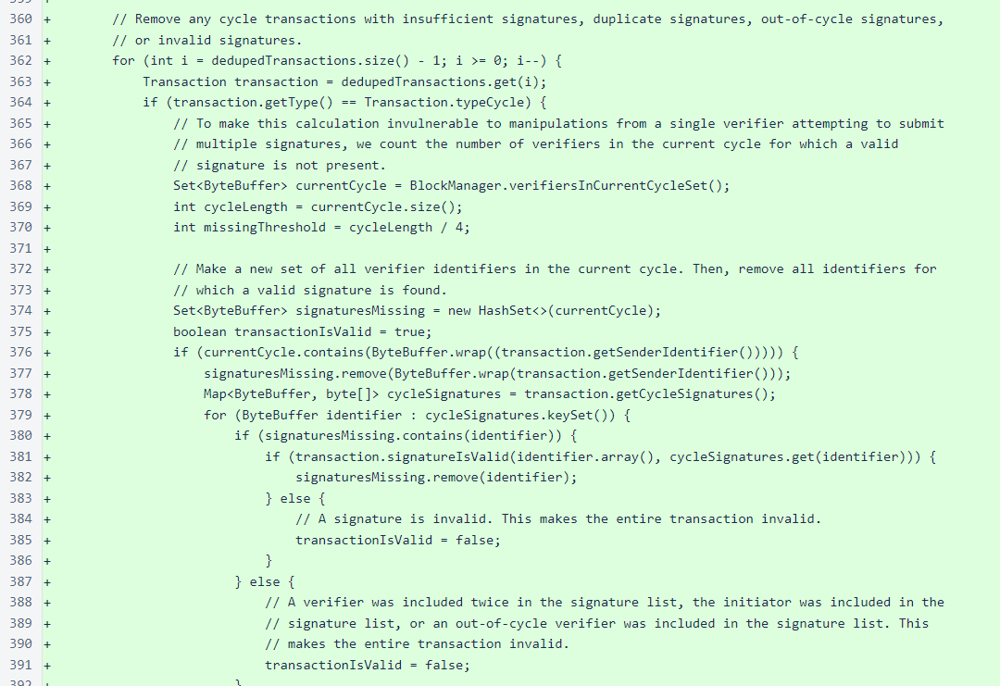In Block, maximumBlockchainVersion has been increased to 1. Its visibility has also been changed to public to allow access from BlockchainVersionManager.
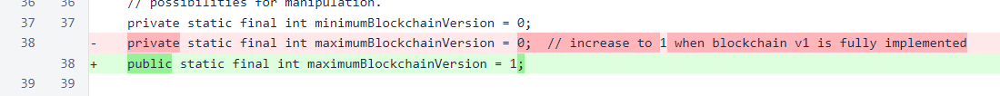In balanceListForNextBlock(), blockchainVersion has been changed to a method argument. Previously, it was anchored at 0, which prevented blockchain version upgrades.
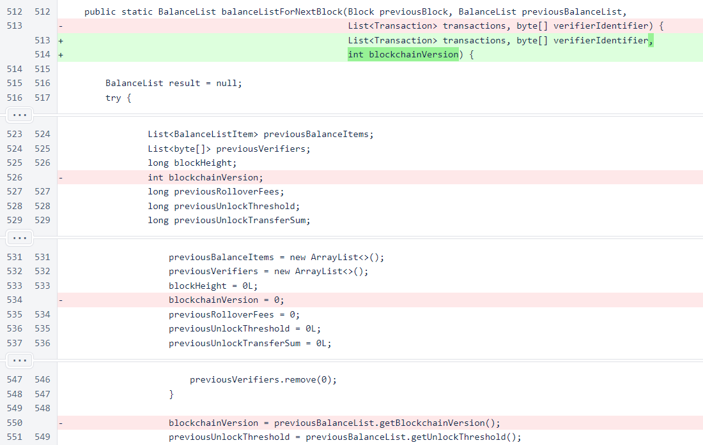When adjusting account balances, the cycle account is used as the source of funds for cycle transactions.
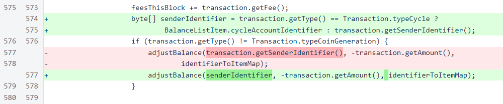One percent of organic transaction fees, rounded down to the nearest µ1, are transferred to the cycle account in blockchain version 1.
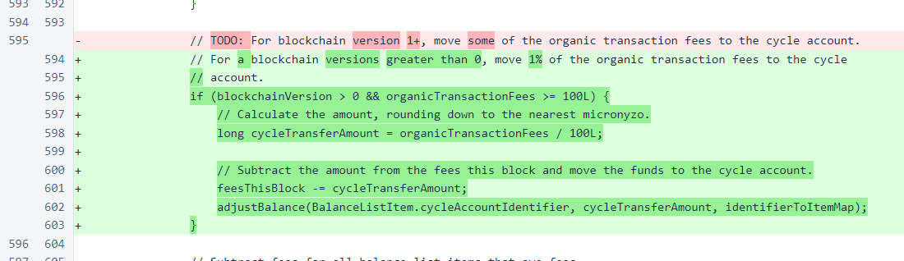Three conditions related to the blockchain version have been added to the chainScore() method. The first assigns an invalid score for invalid versions. The second is the upgrade mechanism — when the blockchain is eligible for upgrade, blocks that do not upgrade receive a small penalty. The third condition penalizes improperly timed upgrade blocks. To avoid prolonged slow-downs due to repeatedly failed upgrades, the blockchain is only designed to attempt an upgrade once every 50 blocks.
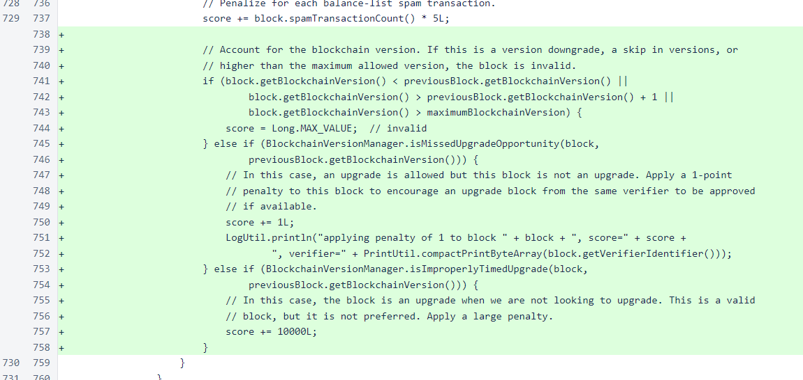The blockchain version has been added to the Block.toString() result.
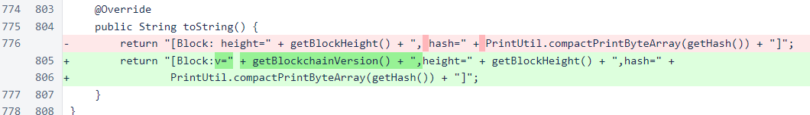In BlockFileConsolidator, calls to NotificationUtil.send() have been replaced with calls to LogUtil.println(). The NotificationUtil class was sparsely used and not properly maintained, so it has been eliminated in this version.
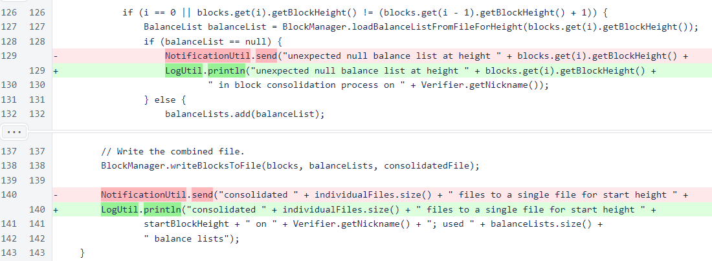In BlockManager, NotificationUtil.send() has been replaced by LogUtil.println().
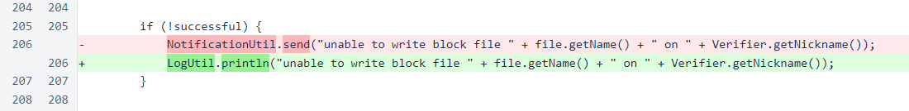Calls to Block.balanceListForNextBlock() now include the blockchain version.
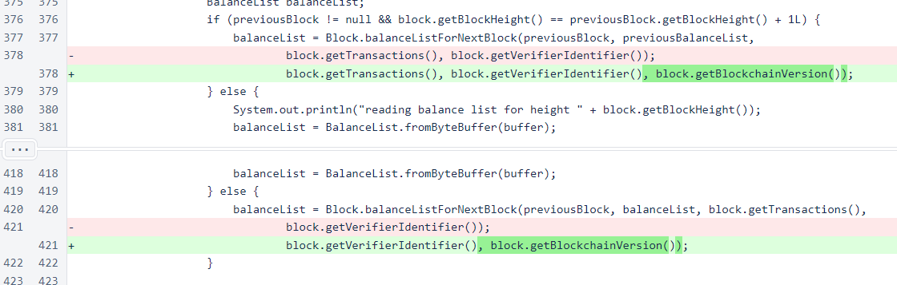BlockchainVersionManager has been implemented. To allow the upgrade process to be tested quickly on a testnet, an alternate activation height of 100 was added for when the verifier is running in testnet mode. The upgradePending() method is used by the Verifier class to determine whether an upgrade block should be produced. The other two methods are used for scoring blocks, as was explained above.
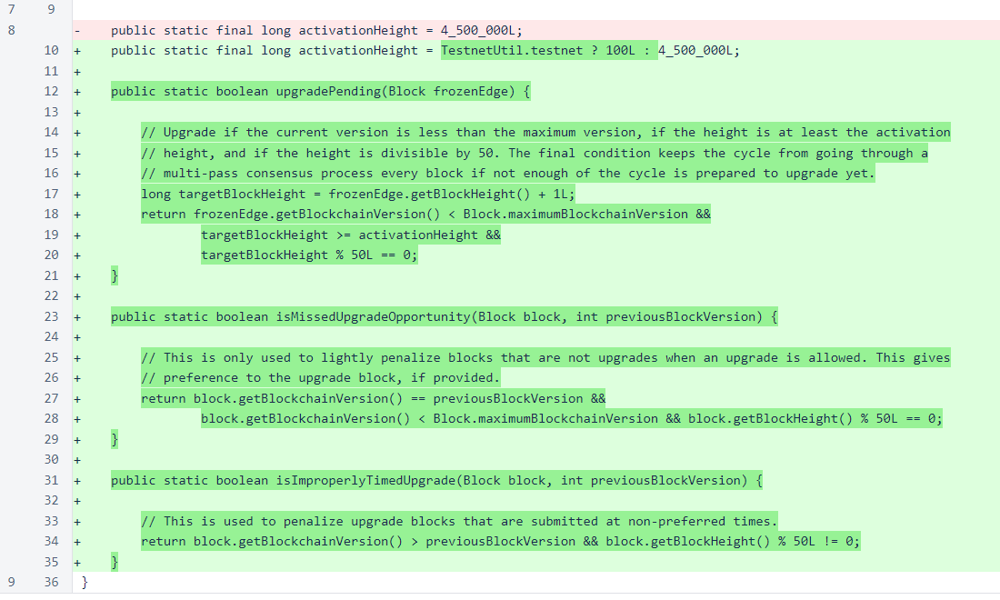CycleTransactionManager is a simple class that tracks pending cycle transactions. The transactions are stored in a map. The map is keyed on initiator identifier, so there may be no more than 1 transaction proposed by a single verifier in the map at a time. The map is persisted to a file shortly after each time it changes, and the persisted data is loaded into memory on initialization by the loadMap() method. The mapHasChanged field is used to avoid unnecessary file writes when the information in the map has not changed.
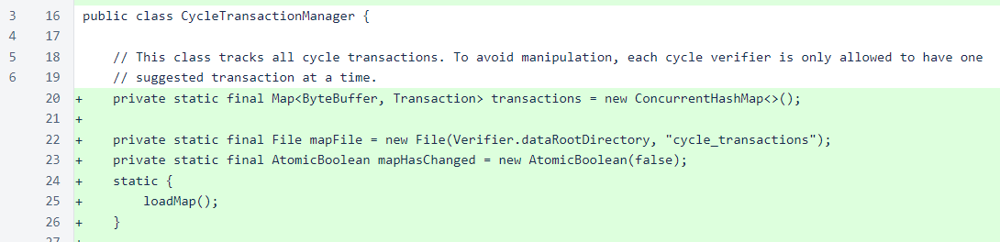The registerTransaction() method is used to add transactions to the map. Like the TransactionPool.addTransaction() method, this method returns a boolean value to indicate whether the transaction was added, and it also accepts StringBuilder objects to communicate error and warning messages to the client of the method.
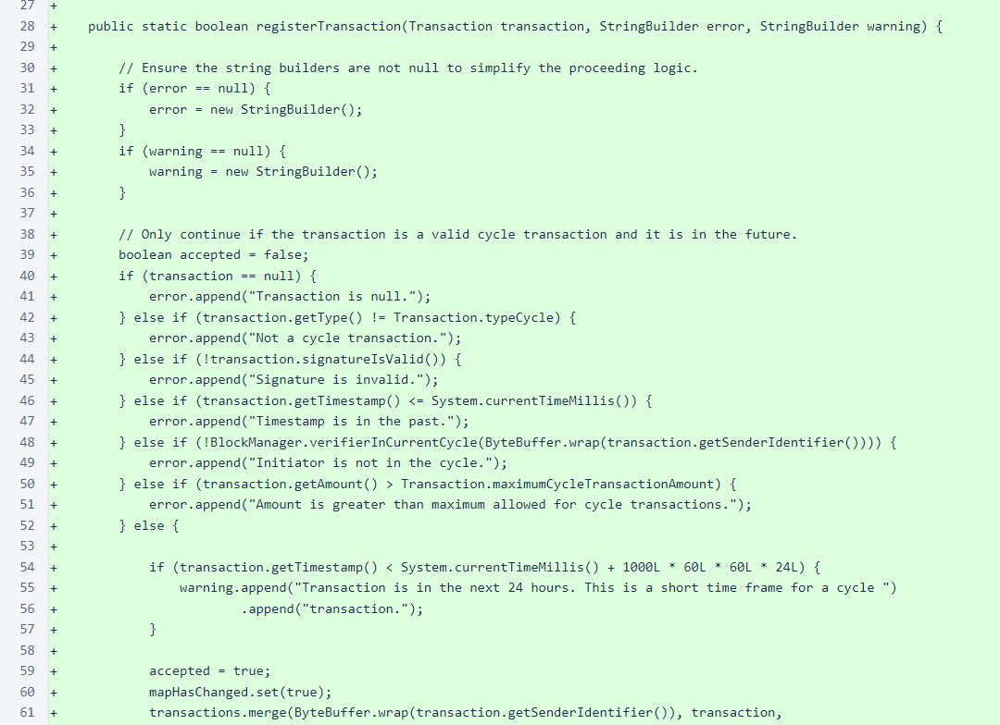The registerSignature() method adds signatures to cycle transactions in the map. Cycle signatures are referenced to the initiator identifier when they are transmitted, and they are checked for validity several times before being approved.
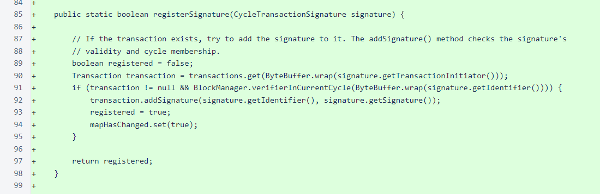The getTransactions() method provides a view of all transactions in the map. This is used in responses of type CycleTransactionListResponse_50 in the process of listing and signing cycle transactions from the client.
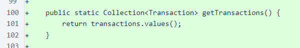The transactionsForHeight() method provides all cycle transactions in the map for the specified height. This is used by Verifier when assembling new blocks.
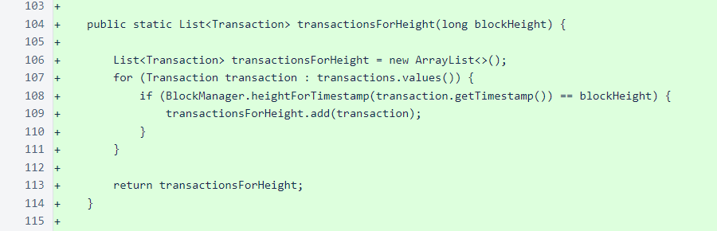The performMaintenance() method removes transactions below the current frozen edge. Also, if the map has changed since the last time this method was executed, the map is persisted to file.
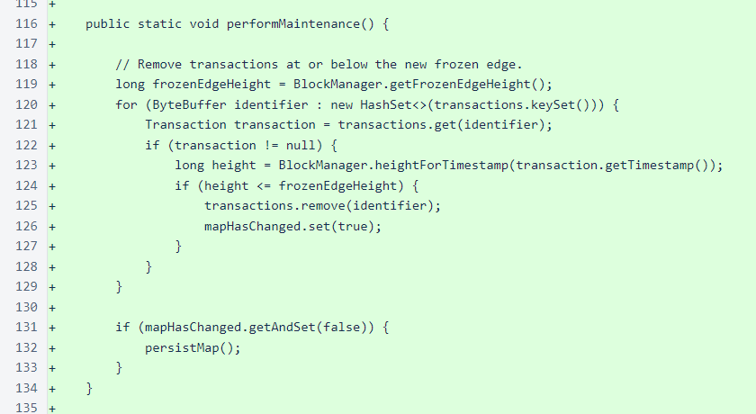The persistMap() method writes the map to file. Cycle transactions are expected to typically require several days to gather enough signatures for approval, so losing knowledge of these transactions on verifier restarts would be problematic.
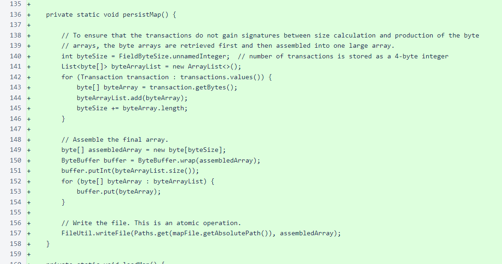In loadMap(), the transaction file is read, and all the transactions it contains are registered with the CycleTransactionManager. This file uses the same binary transaction format used for messages, prefixed by a single 4-byte integer to indicate the number of transactions in the file.
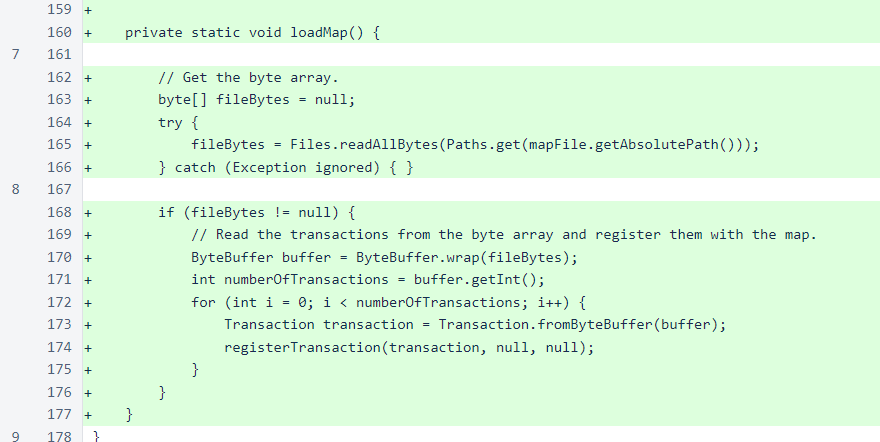The transactionPoolLength constant has been eliminated from FieldByteSize. To improve readability of the code and reduce clutter, infrequently used byte-size constants such as this are being replaced by unnamed constants (unnamedByte, unnamedDouble, unnamedInteger).
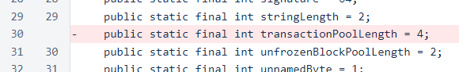In MeshListener, the class used in TransactionPoolResponse14 messages has been renamed from TransactionPoolResponse to TransactionListResponse to indicate the expanded use of the class in this version. This does not change the structure of this message, and it remains compatible will all previous versions of the Nyzo software.
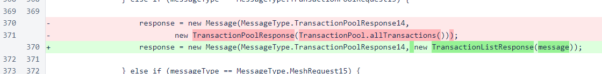Responses have been added for messages of type CycleTransactionSignature_47 and CycleTransactionListRequest_49. A new response was not required for cycle transactions, because they use the existing Transaction5 message type.
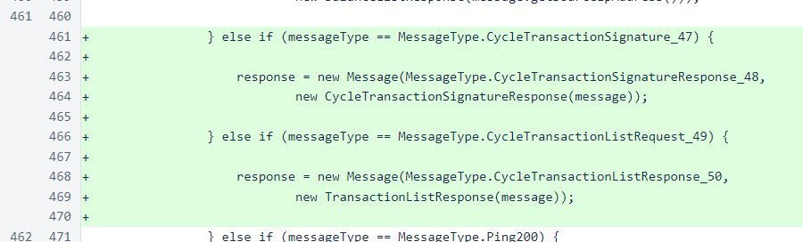In Message.processContent(), renaming of TransactionPoolResponse to TransactionListResponse has been completed, and the new message types are processed.
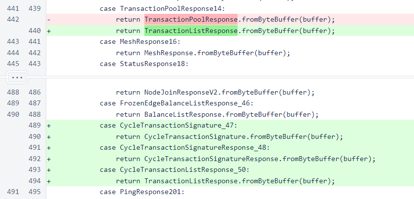In the MessageType enumeration, the comments regarding elimination of MissingBlockVoteRequest23 and MissingBlockVoteResponse24 have been removed. Elimination of these messages had deleterious effects on mesh connectedness and consensus, so their use was restored in version 537.
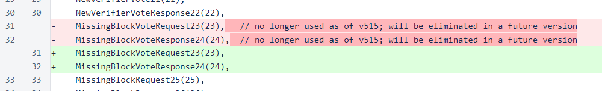Message types have been added for the new messages required for the process of signing cycle transactions.
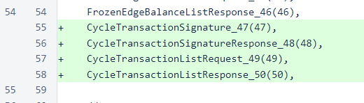In NodeManager, use of NotificationUtil has been replaced with LogUtil, and getMeshSize() has been renamed to getMeshSizeForGenesisCycleVoting(). This method was only intended to used for Genesis-cycle voting, and the name change was implemented to ensure that the method was not mistakenly used for other purposes. To ensure that multiple entries for a single identifier do not produce an unattainable voting threshold in the Genesis cycle, the number of unique identifiers in the mesh is now returned by this method.
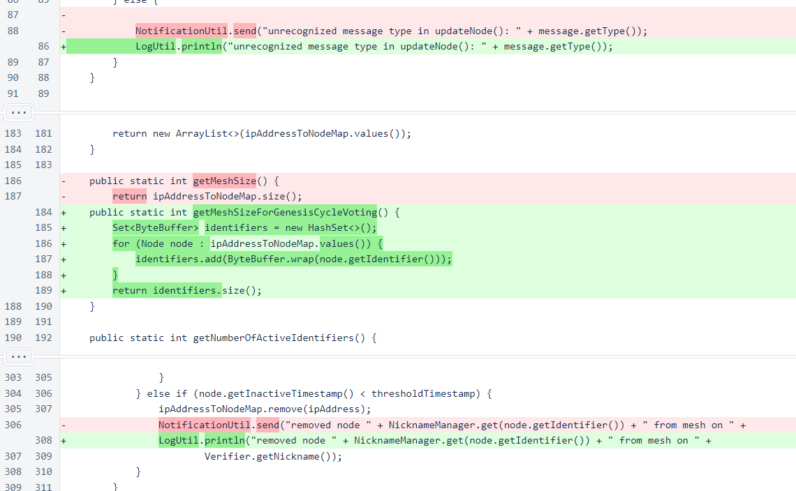In SeedTransactionManager, s3UrlForFile() has been renamed to urlForFile() to reflect that the URL produced is no longer necessarily an s3 URL. For testnet operation, files are retrieved directly from the testnet server to simplify the process of resetting the testnet blockchain.
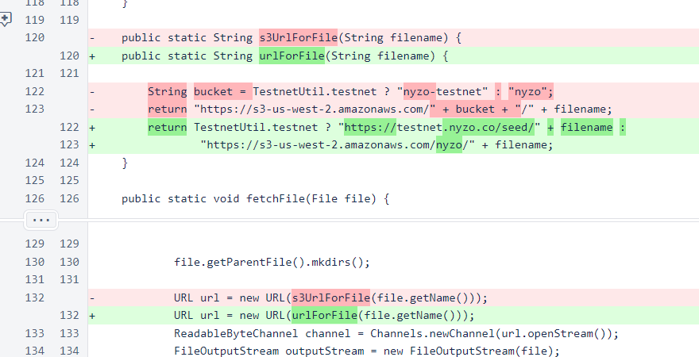In the TestnetGenesisBlockCreator script, creation of the Genesis block has been moved from the main() method to a method called createGenesisBlock(). This method is now called from the main() method, so behavior of the script is unchanged. This modification was made to allow other scripts to easily reuse this script's functionality. Also, a blockchain version of 0 is now specified for the Genesis block. This does not change the behavior of the script, either. The "version 0" blockchain is simply the versionless blockchain that has existed since the inception of Nyzo.
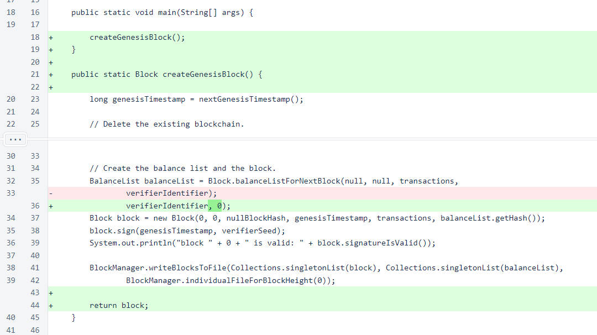In Transaction, a constant was added to specify a maximum cycle transaction amount of ∩100,000.
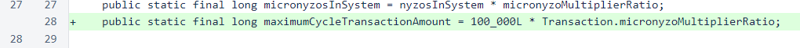In the static method for rebuilding cycle transactions, all typical transaction fields are now provided. While there is no reason for a cycle transaction to use a previous hash other than the Genesis block, there is also no reason not to allow another hash to be used. Also, the senderIdentifier field now stores the identifier of the initiator of the cycle transaction, and the signature field now stores that verifier's signature of the transaction.
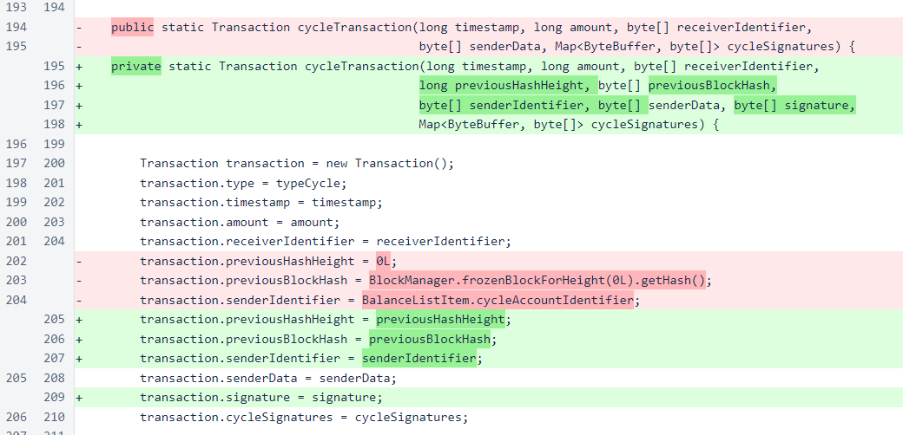Analogous changes have been made to the method that builds new cycle transactions.
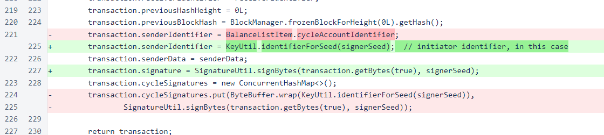Cycle transactions do not produce fees.
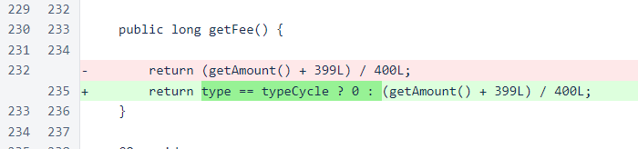In getByteSize(), space is now allocated for the list of cycle signatures in cycle transactions.
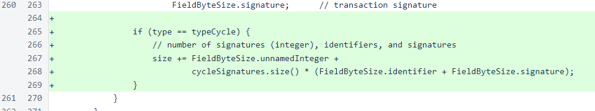In getBytes(), the cycle transaction type has been added to the condition that serializes most transaction fields.
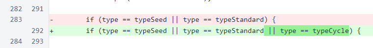Cycle transaction signatures are ordered by verifier identifier. While any ordering of these signatures would be suitable, consistency of ordering is necessary to preserve block signature integrity.
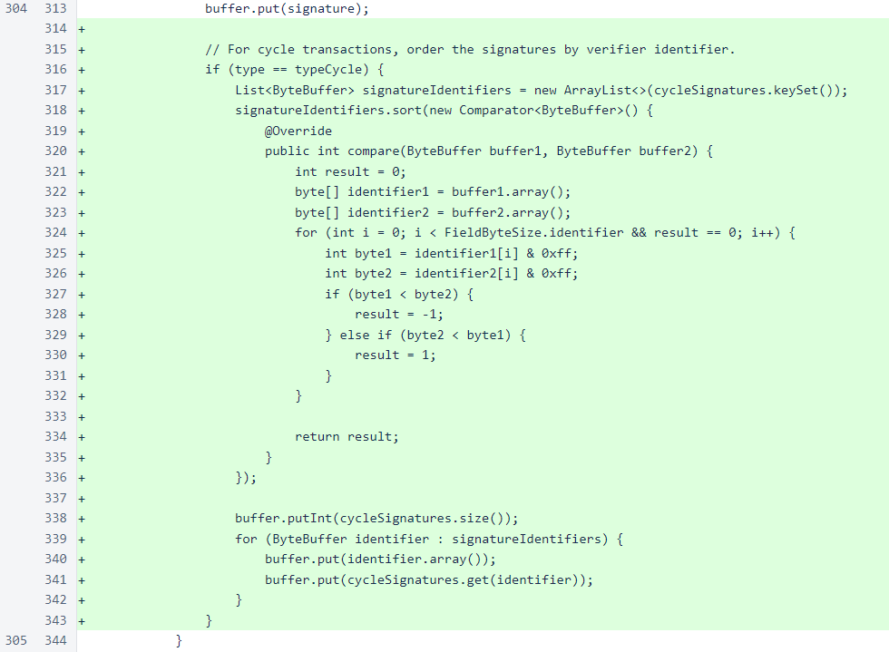In fromByteBuffer(), several reads of byte arrays have been replaced with calls to the Message.getByteArray() convenience method to improve readability. Also, the cycle transaction type has been added to the condition that reads most of the fields of the transaction.
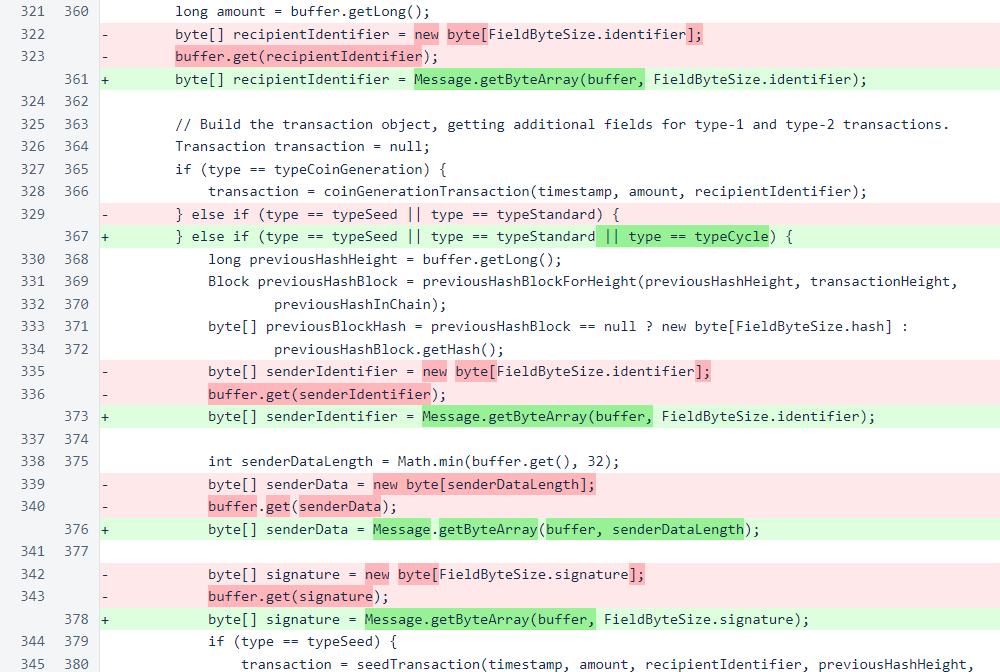Cycle signatures are now deserialized for cycle transactions.
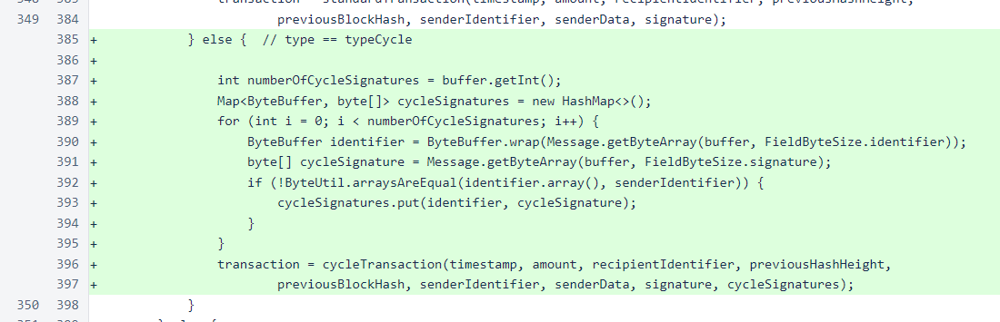The signatureIsValid() method now processes cycle transactions. However, it is important to note that a true result from this method for a cycle does not mean that the transaction will necessarily be accepted into the blockchain. It only means that the transaction was signed properly by the initiator of the transaction.
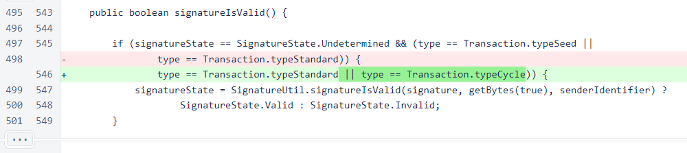An overload of signatureIsValid() was added for checking cycle signatures.
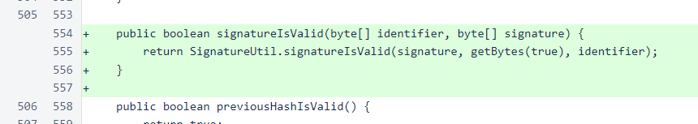The addSignature() method attaches a new cycle signature to cycle transactions. Some basic checks are performed to ensure the signature is relevant to the transaction.
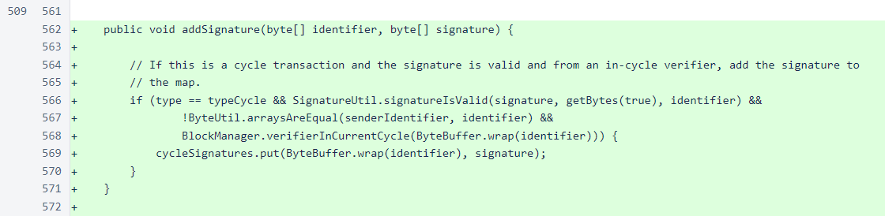The filterSignatures() method removes cycle transaction signatures that are no longer relevant to the transaction. This method is called just before an attempt is made to incorporate a cycle transaction into a block.
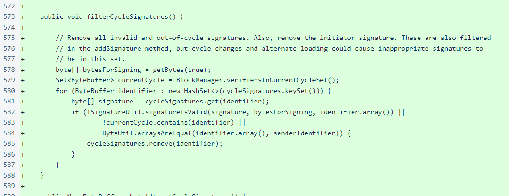The getCycleSignatures() method exposes the cycle signatures to other classes, and the toString() method was added to aid in debugging.
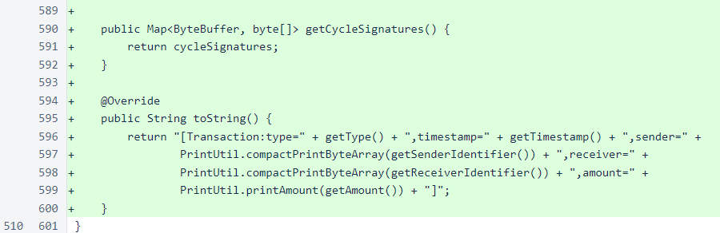In UnfrozenBlockManager, downgrade blocks are rejected. Also, the maximum number of blocks retained at any height has been reduced from 500 to 10.
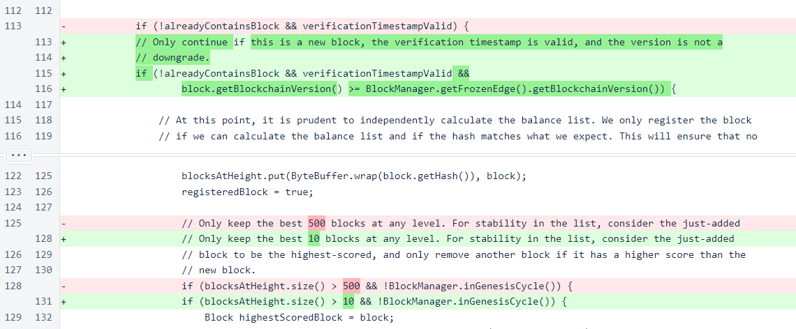The new method name is now called to determine the voting pool size for the Genesis cycle, and logging has been added when unable to freeze a block in the Genesis cycle. The testnet was used extensively and reset repeatedly to test the blockchain upgrade process, and a reliable Genesis cycle was important for efficient testing.
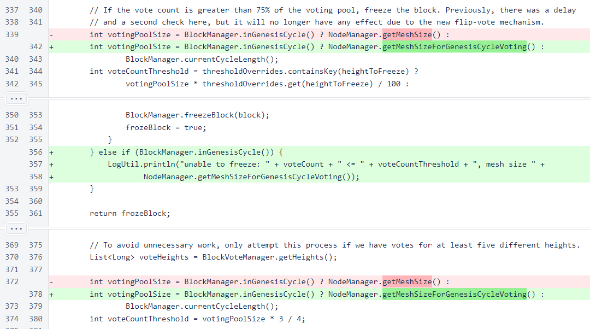In fetchMissingBlock(), one NotificationUtil message and one System.out message have been changed to LogUtil.
In Verifier, the maps used to track which blocks have been created and transmitted have been replaced with Block variables to store created blocks and boolean variables to track whether those blocks have been transmitted. The maps were useful when Nyzo would work on multiple heights at a time (in the previous blockchain), but they were overly complicated for this blockchain, and an additional set of maps would have been necessary to handle the upgrade process.
The Genesis block, like seed transactions, is now fetched directly from the testnet web server for testnet mode.
Elimination of the block-tracking maps has eliminated the need to clean up those maps. Instead, the new Block fields are set to null when a block is frozen.
The newer BlockManager.getFrozenEdge() method is now used to fetch the frozen-edge block. In addition to creating a block for the current version of the blockchain, a block is also created to attempt to upgrade the blockchain when an opportunity to do so arises.
The current-version block and upgrade block are both transmitted when their scores indicate that they should be transmitted. The behavior is unchanged for the current-version block; the only behavior change here is the addition of upgrade-block transmission.
When a block is frozen, the fields that track which blocks have been created and transmitted are reset. Also, maintenance of the CycleTransactionManager has been added.
In extendBlock(), an option to upgrade the blockchain has been added. The upgradeBlockchainVersion option is passed to the createNextBlock() method, the block is stored in the appropriate field after it is created.
The createNextBlock() method now has an option for upgrading the blockchain version, and approved cycle transactions are now incorporated into the block. Detailed logging indicates reasons for failure to include any cycle transactions that are provided by the CycleTransactionManager.
The blockchain version is calculated just before balance-list creation. In the case of an upgrade, the version is incremented. The version of the balance list is then used for block creation.
Verifier initialization time is now exposed via an accessor method for use in the private status response.
In ClientTransactionUtil, a method has been added for sending new cycle transactions to the cycle. Successful transmission are tracked, and each transmission is retried once if the initial transmission is not successful.
The sendCycleTransactionSignature() method follows the same process to send cycle-transaction signatures to the cycle. The process of sending and signing cycle transactions will be difficult and tedious at first. Future versions will work to improve the usability of this process.
Three commands have been added to the client to facilitate the cycle-transaction process.
CycleTransactionListCommand shows all available cycle transactions. If a key of an in-cycle verifier is provided, the cycle transactions are fetched from that verifier and cached locally. Otherwise, just the locally cached transactions are displayed.
CycleTransactionSendCommand sends a new cycle transaction. The user process for this is the same as sending a standard transaction.
CycleTransactionSignCommand signs a cycle transaction initiated by another in-cycle verifier. The transaction is specified by index, which is determined by running the CycleTransactionListCommand.
CycleTransactionSignature, as its name indicates, encapsulates signatures for cycle transactions. Note that the initiator identifier is specified, not the initiator signature. However, as each initiator is only allowed to have one proposed transaction in the system at a time, and signatures will only validate for the messages they sign, this is not a problem.
CycleTransactionSignatureResponse provides a simple true/false response indicating whether a cycle transaction signature was accepted by a verifier.
Verifier initialization time has been added to the private status response. Notification budget has been removed.
TransactionPoolResponse has been renamed and extended to accommodate the cycle-transaction list. It has also been restricted to self-signed requests for both standard- and cycle-transaction lists. This is a behavior change for standard-transaction lists, but there is no good reason to deliver these lists to all those who request them.
TransactionResponse has been modified to accommodate cycle transactions. Standard transactions are still registered with TransactionPool, but cycle transactions are registered with CycleTransactionManager.
The sentinel always produces a block with the same version as the previous block. The scoring system ensures that failure to upgrade the blockchain version will never cause a verifier to be removed from the cycle.
The NotificationUtil class has been completely removed.
In UpdateUtil, a call to MeshListener.closeSockets() has been added to the terminate() method. The application will not terminate properly if these sockets are not closed. The call to this method was no longer necessary in the reset() method, as the reset() method calls the terminate() method.